L2 UI 0.5.1 产品讨论图集
2张实机截图，其余为页面示意图，用于讨论布局与交互。
打开UI产品讨论文档
首页 · 实机截图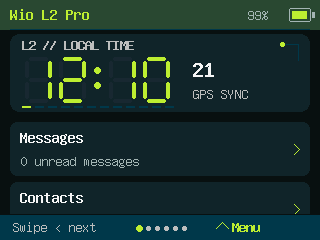
锁屏 · 实机截图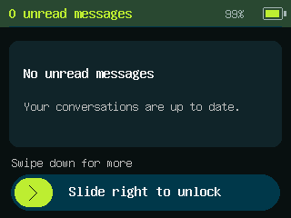
首页 · 页面示意图 消息首页 · 页面示意图
消息首页 · 页面示意图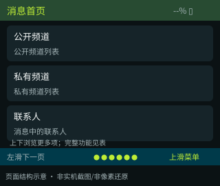
联系人主页 · 页面示意图 地图主页 · 页面示意图
地图主页 · 页面示意图 设置首页 · 页面示意图
设置首页 · 页面示意图 会话 · 页面示意图
会话 · 页面示意图 消息编辑 · 页面示意图
消息编辑 · 页面示意图 节点详情 · 页面示意图
节点详情 · 页面示意图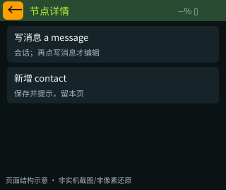
发现设备 · 页面示意图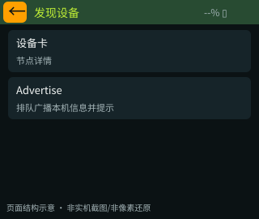
LoRa地区预设 · 页面示意图 快捷操作 · 页面示意图
快捷操作 · 页面示意图 锁屏 · 页面示意图
锁屏 · 页面示意图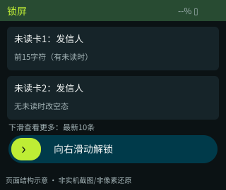
关于设备 · 页面示意图 引导1 名称语言 · 页面示意图
引导1 名称语言 · 页面示意图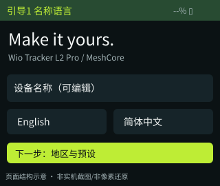
引导2 地区预设 · 页面示意图 引导3 定位隐私 · 页面示意图
引导3 定位隐私 · 页面示意图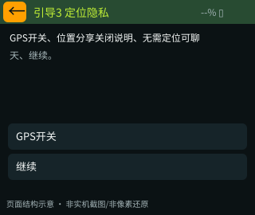
引导4 确认开始 · 页面示意图 通用输入 · 页面示意图表情选择 · 页面示意图
通用输入 · 页面示意图表情选择 · 页面示意图 二次确认 · 页面示意图
二次确认 · 页面示意图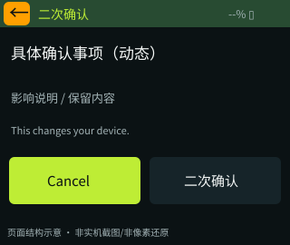
消息详情 · 页面示意图 快捷短语 · 页面示意图
快捷短语 · 页面示意图 硬件状态 · 页面示意图
硬件状态 · 页面示意图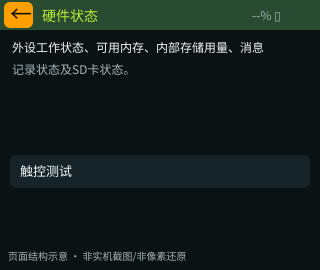
触控测试 · 页面示意图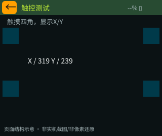
音频主页 · 页面示意图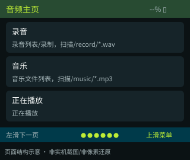
公开频道列表 · 页面示意图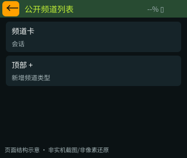
私有频道列表 · 页面示意图消息中的联系人 · 页面示意图 基础设置 · 页面示意图
基础设置 · 页面示意图 高级设置 · 页面示意图
高级设置 · 页面示意图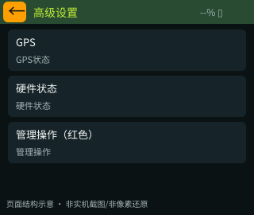
录音列表/录制 · 页面示意图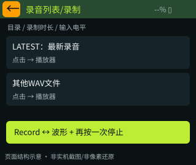
音乐文件列表 · 页面示意图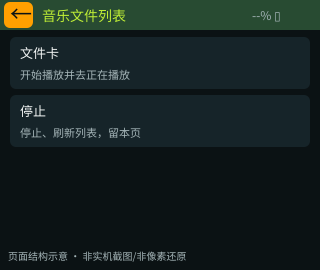
新增频道类型 · 页面示意图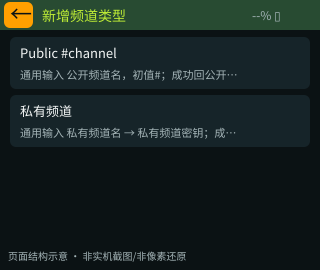
正在播放 · 页面示意图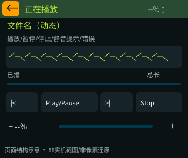
轨迹管理 · 页面示意图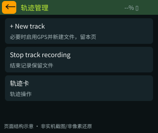
轨迹操作 · 页面示意图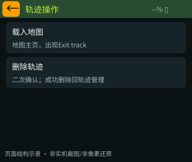
航点列表 · 页面示意图 航点操作 · 页面示意图
航点操作 · 页面示意图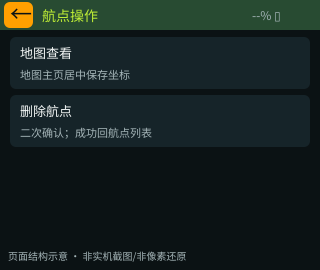
离线瓦片 · 页面示意图 GPS状态 · 页面示意图
GPS状态 · 页面示意图 应用列表 · 页面示意图
应用列表 · 页面示意图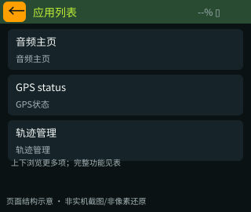
管理操作 · 页面示意图 GPS行进罗盘 · 页面示意图
GPS行进罗盘 · 页面示意图 截屏设置 · 页面示意图
截屏设置 · 页面示意图 设备名称 · 填写示意图
设备名称 · 填写示意图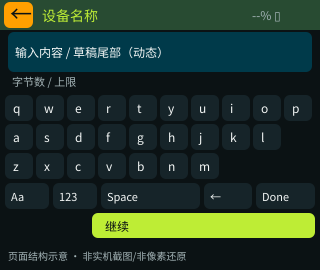
联系人公钥 · 填写示意图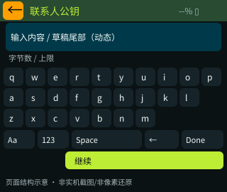
联系人名称 · 填写示意图公开频道名 · 填写示意图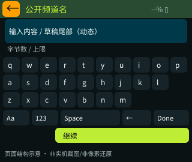
私有频道名 · 填写示意图 私有频道密钥 · 填写示意图
私有频道密钥 · 填写示意图 底部主导航 · 交互示意图
底部主导航 · 交互示意图 首页快捷入口浮窗 · 交互示意图
首页快捷入口浮窗 · 交互示意图 地图竖向菜单 · 交互示意图
地图竖向菜单 · 交互示意图 普通状态提示 · 交互示意图
普通状态提示 · 交互示意图 截屏成功提示 · 交互示意图
截屏成功提示 · 交互示意图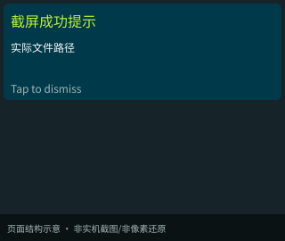
错误提示 · 交互示意图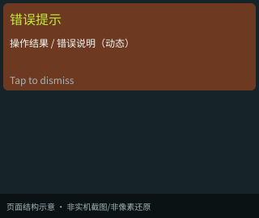
页面层级 · 示意图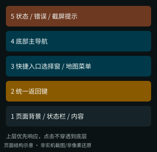